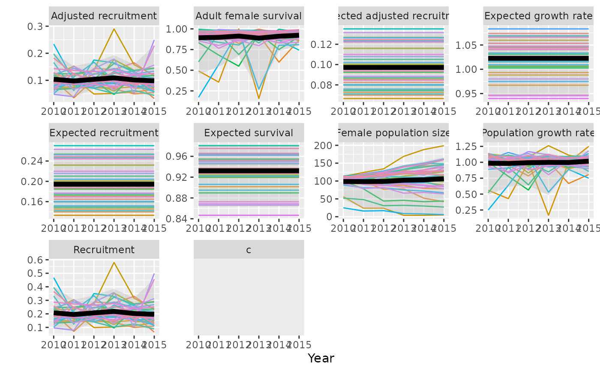

Projections of population growth from demographic model summaries.
Source:R/trajectoriesFromSummary.R
trajectoriesFromSummary.RdGet sample trajectories and summaries from a model defined by a list of
parameters. These parameters can come fitted Bayesian model using estimateBayesianRates()$parList
or be specified arbitrarily. When parameters from a fitted Bayesian model are
used, expected outcomes from trajectoriesFromSummary and
trajectoriesFromBayesian() are the same, but trajectoriesFromSummary
projections do not include variation in interannual variation over time.
Usage
trajectoriesFromSummary(
replicates,
N0,
Rbar,
Sbar,
Riv,
Siv,
type = "beta",
cPars = demographyDefaults(),
doSummary = T,
returnSamples = T,
nthin = formals(bboutools::bb_fit_survival)$nthin,
varPersists = T,
...
)Arguments
- replicates
integer. Number of replicate populations.
- N0
number or dataframe. Optional. Initial population size(s). If NA (default) then population growth rate is $_t=S_t*(1+cR_t)/s$. If a data frame N0 column is required, and PopulationName column is required if there is more than one row. Additional (optional) variation columns will be used by
addN0Variation().- Rbar, Sbar
Mean and standard deviation of R_bar and S_bar over time. See
estimateBayesianRates()$parListfor expected form.- Riv, Siv
Parameters defining the distribution of interannual variation. See
estimateBayesianRates()$parListfor expected form.- type
The distribution of interannual variation varies between "beta" or "bbou" model types.
- cPars
optional. Parameters for calculating composition survey bias term.
- doSummary
logical. Default TRUE. If FALSE returns unprocessed outcomes from caribouPopGrowth. If TRUE returns summaries and (if returnSamples = T) sample trajectories from prepareTrajectories.
- returnSamples
logical. If FALSE returns only summaries. If TRUE returns example trajectories as well.
- nthin
integer. The number of the thinning rate.
- varPersists
logical. If FALSE treats all variation as interannual variation.
- ...
Additional arguments passed to
caribouPopGrowth
Value
If doSummary is TRUE and returnSamples is TRUE a list with elements:
summary: a data.frame mean, lower (2.5%) and upper (97.5%) for each metric.
samples: a data.frame providing the full range of trajectories from the model. It is in a long format where "Amount" gives the value for each metric in c, survival, recruitment, X, N, lambda, Sbar, Rbar, Xbar, and lambda_bar, with a row for each combination of "MetricTypeID", "Replicate", "Year", "LambdaPercentile" and PopulationName.
surv_data and recruit_data: data.frames with recruitment and survival data
popInfo: data.frame of population information including N0, PopulationName and c.
If doSummary is FALSE a data.frame with the output from caribouPopGrowth()
See also
Caribou demography functions:
addN0Variation(),
bayesianScenariosWorkflow(),
bayesianTrajectoryWorkflow(),
betaNationalPriors(),
caribouPopGrowth(),
compareTrajectories(),
compositionBiasCorrection(),
convertTrajectories(),
dataFromSheets(),
demographicProjectionApp(),
estimateBayesianRates(),
estimateNationalRate(),
getNationalCoefficients(),
getScenarioDefaults(),
plotCompareTrajectories(),
plotSurvivalSeries(),
plotTrajectories(),
popGrowthTableJohnsonECCC,
simulateObservations(),
trajectoriesFromBayesian(),
trajectoriesFromNational(),
trajectoriesFromSummaryForApp()
Examples
# trajectories from arbitrary demographic rates
traj <- trajectoriesFromSummary(replicates = 35, N0 = 100,
Rbar = data.frame(mean = 0.19, sd = 0.23, lower = 0.13,
upper = 0.27, Annual = 2010:2015, Year = 2010:2015,
PopulationName = "A"),
Sbar = data.frame(mean = 0.94, sd = 0.61, lower = 0.86,
upper = 0.98, Annual = 2010:2015, Year = 2010:2015,
PopulationName = "A"),
Riv = data.frame(R_iv_mean = 0.36, R_iv_shape = 2),
Siv = data.frame(S_iv_mean = 0.63, S_iv_shape = 1.4),
type = "bbou")
#> Compiling model graph
#> Resolving undeclared variables
#> Allocating nodes
#> Graph information:
#> Observed stochastic nodes: 0
#> Unobserved stochastic nodes: 14
#> Total graph size: 111
#>
#> Initializing model
#>
#> Compiling model graph
#> Resolving undeclared variables
#> Allocating nodes
#> Graph information:
#> Observed stochastic nodes: 0
#> Unobserved stochastic nodes: 14
#> Total graph size: 111
#>
#> Initializing model
#>
plotTrajectories(traj)
#> Warning: Removed 210 rows containing missing values or values outside the scale range
#> (`geom_line()`).
#> Warning: Removed 6 rows containing missing values or values outside the scale range
#> (`geom_ribbon()`).
#> Warning: Removed 6 rows containing missing values or values outside the scale range
#> (`geom_line()`).
